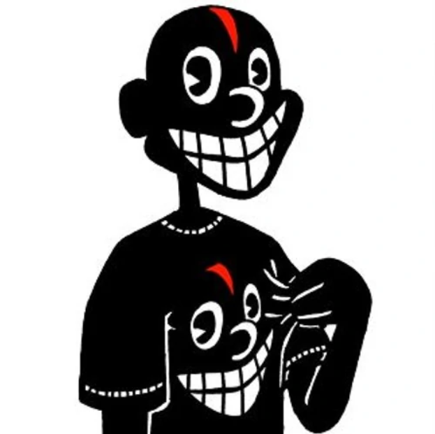
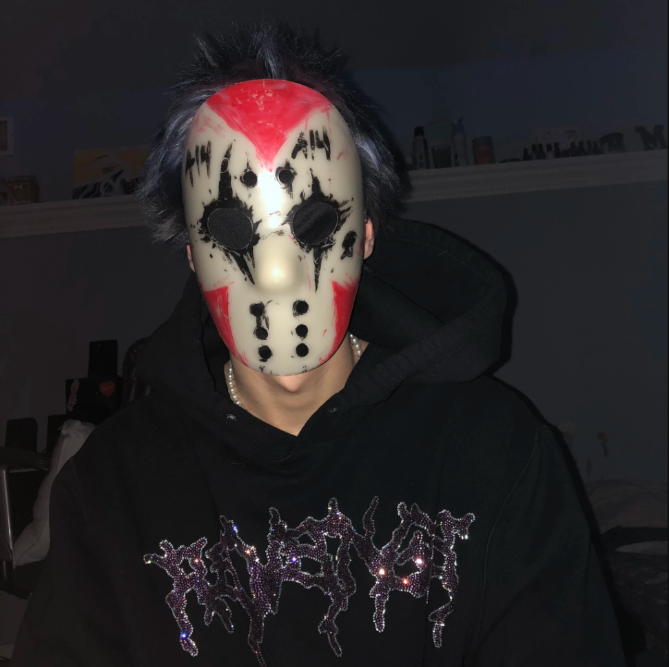

Spider gang est un collectif de chanteur et beat maker dont le style varie entre l'Experimental Trap, Emo Rock, Rap, Hip Hop, trap metal, et bien d'autres.

Lil darkie, de son vrai nom Joshua Jagan Hamilton est le fondateur du groupe spider gang. Né en 1998 en Californie, il commence à faire de la musique en 2016 sous le pseudo de brahman sur la plateforme soundcloud. C'est en 2018 qu'il changera de nom pour "Lil darkie".lil darkie
Wendigo, nommé Alexander Wacksman, est un beat maker talentueu qui produit énormément pour spider gang. il est natif de Woodstock New York.wendigo

Afourteen, aussi connu sous son vrai nom Marric Slack est reconnu pour chanter ces paroles très fort et atteindre des notes très hautes. Il commence sa carrière musicale en 2018 en écrivant des punchline/disstrack. Il as grandit dans le New Jerseyafourteen
Blckk, est un membre de spider gang originaire de Virginie. Né en 2001, la musique de blckk se démarque par sa voie grave et imposante.blckk
Tableau
Concerts du mois de Décembre 2022
Lun
Mar
Mer
Jeu
Ven
Sam
Dim
1
2
Kansas City, Missouri. 10PM
3
4
5
6
7
Louisville, Kentucky. 9PM
8
9
10
11
12
Reno, Nevada. 10PM
13
14
15
16
17
18
Oklahoma City, Oklahoma. 9PM
19
20
21
22
23
24
25
26
27
28
29
Détroit, Michigan. 10PM
30
31
Video
TP2
Technique d'intégration multimédia
582-1W1 – Mise en page Web
Collège de Maisonneuve
Automne 2022
Site réaliser par Arthur Poupart, les images utiliser ne sont pas les miennes.